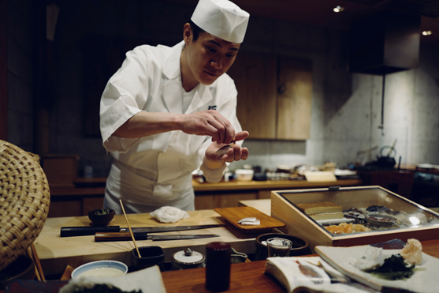

"Joy can only be real if people look upon their life as a service and have a definite object in life outside themselves and their personal happiness."
- Leo Tolstoy
"Joy can only be real if people look upon their life as a service and have a definite object in life outside themselves and their personal happiness."
- Leo Tolstoy
MasagoNeo Japanese sushi has expanded its menus and lowered prices. The chef, with 20 years' experience at a popular Asian restaurant. We utilize the finest seasonal ingredients to emphasize the elements of color, shape, flavor and texture. Each dish is carefully chosen and arranged to enhance your dining pleasure. Masago’s menu features signature dishes such as: Painted Lady Roll, Masago Roll, Hadeed Roll, Long island Roll, Jalapeno Yummy Roll, Six Flags Roll. Our kitchen features Steak and Shrimp Hibachi, Seafood Teriyaki, Lobster Teriyaki and Japanese Fried Rice.
